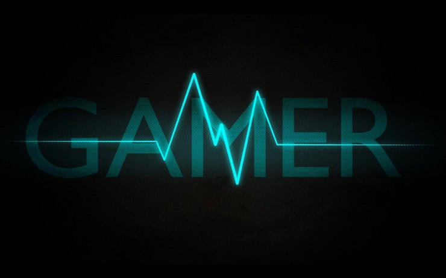

Hello my name is Anthony Toshiaki Di Leonardo. I'm an aspiring Full Stack Developer and video game designer. On Any given day you can find me playing video games with my friends who reside in California. I am originally from Union City, California. I currently help maintain Seahawks.net with my father. While learning different computer languages on the side.
In high school I took a Ap Computer Science class as an elective. This set me on a course to wanting to learn about all things computers and started breaking and fixing them.
